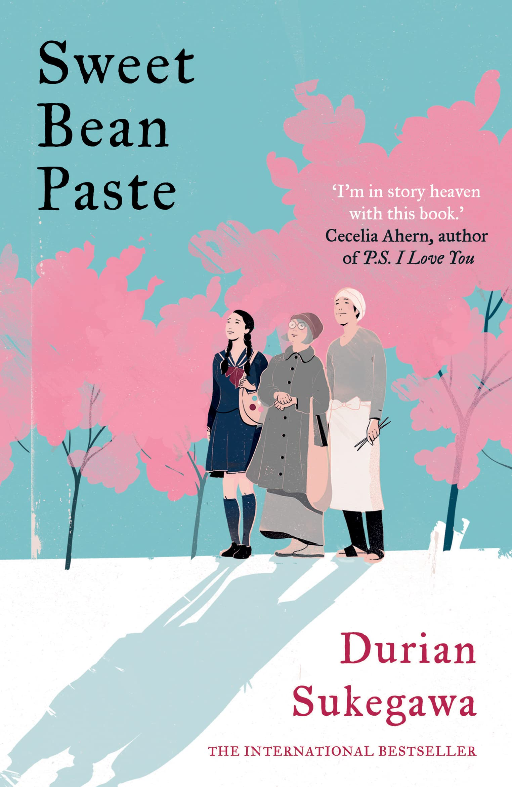

Sweet Bean Paste tells the story of Sentaro, a man with a troubled past who works in a small dorayaki (sweet red bean pancake) shop in Tokyo. One day, Tokue Yoshii, an elderly woman with disfigured hands, appears and offers to help him with the bean paste. Despite initial hesitation, Sentaro is won over by the rich, flavorful paste she makes — and by her quiet wisdom. As their bond deepens, Tokue’s hidden past as a leprosy survivor comes to light, challenging Sentaro’s views on life, dignity, and shame. The novel becomes a gentle exploration of how society treats those who are different, and how connection can slowly heal emotional wounds.
Review
Sweet Bean Paste is a quiet, meditative novel that explores the beauty of ordinary life and the quiet pain of social exclusion. Durian Sukegawa writes with great compassion, and his prose — translated by Alison Watts — is clear, warm, and emotionally restrained in a way that amplifies its power. The story unfolds slowly, like the careful preparation of dorayaki filling, and that pacing works well for its contemplative tone. Tokue’s philosophical observations about nature, time, and the art of cooking elevate what might seem like a simple narrative into something deeper and more spiritual. Tokue is the emotional core of the book — wise, dignified, and heart-achingly human. Through her, the novel confronts Japan’s history of discrimination against leprosy patients (even after they were no longer contagious), a topic rarely addressed in fiction.
🌟 Verdict
Sweet Bean Paste is a tender, quietly devastating story that lingers in your heart. It speaks to the dignity of those cast aside by society and reminds us of the redemptive power of human connection — all through the humble act of making bean paste. A must-read for fans of compassionate, character-driven fiction with a poetic edge.
 credits: to the @Author and Amazon